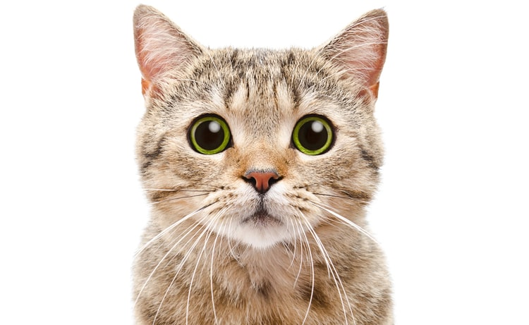

Стерилизация кошек: плюсы и минусы

Ветеринары настаивают: самый лучший выход - удаление половых желез. Операция делается и котам, и кошкам. У самцов она проходит легче, самки же восстанавливаются несколько дней.
- Часто приходится слышать возражение: «Да как же я свою Мурочку буду природных возможностей лишать?» Остается только догадываться, что они имеют в виду, - комментирует Денис Сухарев. - Сводить кошку с котами и выкидывать потомство на улицу? Топить? Кошка запрограммирована природой на 2 - 3 окота в год. В помете 3 - 4 котенка. Если вы позволите своей любимице бесконтрольно рожать, скорее всего, потеряете ее лет через 5 - 6. Частые роды изнашивают организм.
Когда нужно проводить операцию? Ветеринары рекомендуют делать это после 6 месяцев. Лучше всего до 8 - 9 месяцев. В этом возрасте кошки легче переносят наркоз и быстрее восстанавливаются. С котом лучше наведаться к хирургу в 7 - 9 месяцев и не затягивать с этим, чтобы он не привык метить территорию.
- Но не бойтесь нести в клинику даже взрослых животных, - советует наш эксперт. - Я знаю кота, которому сделали операцию в 10 лет. Сейчас ему 15 - жив-здоров, счастлив. Главное - провести до операции биохимический анализ крови, так как животное в возрасте может плохо отреагировать на наркоз.
Плюсы стерилизации кошек
- Кот или кошка становятся спокойными, характер меняется в положительную сторону.
- Животное перестает оставлять метки в доме.
- Снижается риск онкологических заболеваний.
Минусы стерилизации кошек
- Есть риск развития мочекаменной болезни.
- Имеется риск ожирения, поэтому требуется тщательно следить за режимом питания.
- У животного уже никогда не будет потомства.